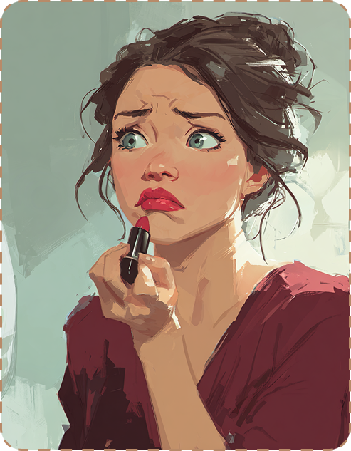
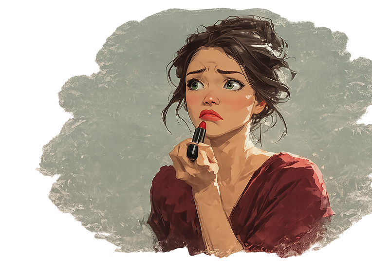
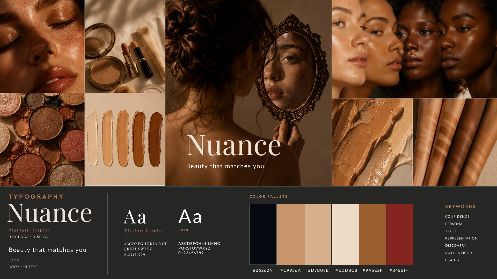
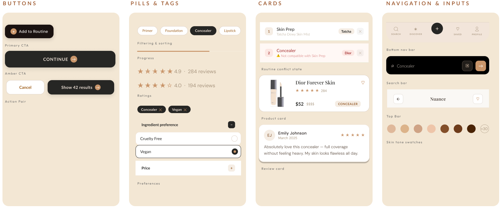
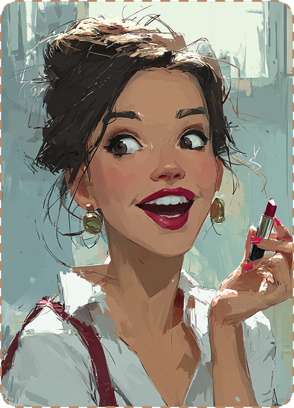

A beauty app that helps you find makeup in your shade, check if products work together, and read real reviews with no sponsored posts or bot comments.
All of this makes it hard to find the right product. People lose time and money.
“If it takes too long, I give up.”
Stacy Keech
If it takes too long, I give up.
People are scared of wasting money, so they research longer, and some give up.
"I never trust sponsored posts."
"I look for people with my skin type."
"Shades never match in real life."
"I check many reviews before buying."
14 people answered, mostly ages 18 to 34.
Disappointed by an online-recommended purchase
Trust sponsored content less, even when disclosed
Value rating for filtering reviews by skin type & tone
Likelihood to use an honest, unsponsored platform
I compared Sephora, Ulta, and Findation using their own pages. Shade matching already exists. Like Findation, Nuance asks which foundations you wear and finds your shade in other brands. None of them say their reviews are free of sponsored posts, and 57% of the people I surveyed trust sponsored content less.
| Sephora | Ulta Beauty | Findation | NuanceMy app | |
|---|---|---|---|---|
| Shade matching | In-store Color iQ scan | Foundation Shade Matcher | Matches across brands | Matches from foundations you already wear |
| Reviews from people like you | Reviewers list skin tone + type | Not listed | Users rate matches | Filter by skin type + tone |
| Reviews nobody was paid for | Not listed | Not listed | Not listed | Verified first, nothing sponsored |
| Routine builder | Not listed | AI shopping assistant | Not listed | Routine Builder |
"Not listed" means the feature isn't mentioned in the app's own store page, website or help pages.
Swipe the table to compare →
“If it takes too long,
I give up.”

22 · Student · Atlanta, GA
Stacy is based on the 14 people I surveyed and the 7 people who tested Nuance. She wants to buy makeup she can trust.
"Better shade matching. More reviews from people who look like me."
"I just want to find something that works on the first try."
Confidence that a product is right for her.
Recommendations she can trust, without starting over.
The more she read, the less sure she felt.
Nuance gives her one guided path to the right product.

Ashley, Bethany, Lida & Naka · moderated sessions across Reviews, Routine Builder, and the Quiz.
Fred, Beth, Ashe · findings triaged by how urgently they needed fixing.

Headers, brand name, feature callouts. A serif to make it feel high-end.
Body copy, labels, buttons, and app UI.

Filter by shade, values, and skin type. Products ranked by routine compatibility. Real unsponsored reviews only.
Browse your routines, check compatibility, fix conflicts, and add products, all in one place.
A guided quiz that learns your skin tone, budget, and finish preference, then matches your existing shade across brands.
I took Nuance from phone to desktop web without changing what it does. Shade matching, routines, and the quiz all work on a wider screen.
Nuance is a concept project, so this is the outcome the design is built to produce, not a measured result.
Stacy finds the right product fast.

Makeup shopping
should be easy.